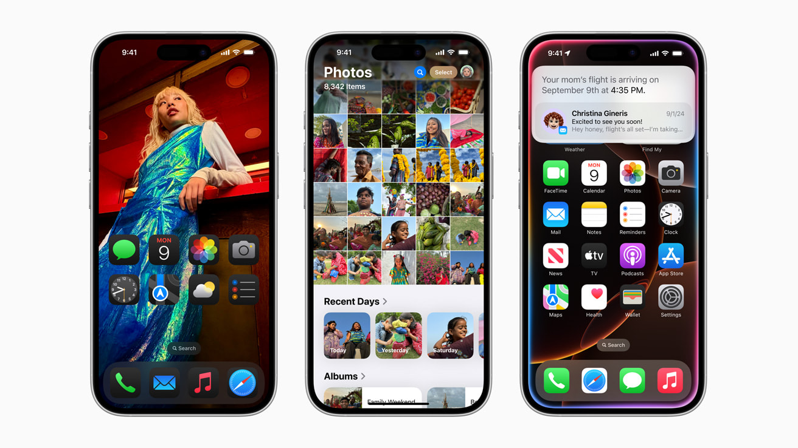

üçè iOS: The Best Mobile Experience?
! Ecosystem Integration: Apple's "walled garden" approach allows for seamless integration between iPhones, iPads, Macs, and Apple Watches. This creates a smooth user experience where devices work together harmoniously. Features like Handoff, AirDrop, and iMessage exemplify this.
!! Software Updates and Security:Apple has direct control over iOS, so updates are typically released simultaneously to all compatible devices. This results in faster access to new features and security patches, reducing vulnerability to malware. Apple also has a strong reputation for prioritizing user privacy.
!!! User Experience and Consistency:iOS is known for its relatively simple and consistent user interface. This can make it easier for users to learn and navigate, even when upgrading to a new iPhone. The App Store also has strict guidelines, which can lead to a more curated and generally higher-quality app experience.
!!!! Enhanced Security and Privacy: iOS is renowned for its robust security measures, including strict app vetting processes and comprehensive privacy controls, offering users a more secure experience.
ü§ñ Android: More Customization, More Power?
Customization and Flexibility:Android allows for extensive customization, from home screen widgets and launchers to deep system-level tweaks. Users can personalize their devices to a much greater degree than on iOS. This flexibility extends to hardware choices, with a wide range of manufacturers and device types available.
Hardware Diversity and Affordability:The Android ecosystem boasts a vast selection of devices at various price points. This means users can find a phone that perfectly fits their needs and budget. From budget-friendly options to high-end flagships, Android offers something for everyone. Additionally, android devices often have features that apple products do not, such as expandable storage.
Openness and App Availability:Android's open-source nature allows for greater freedom in app development and distribution. Users can install apps from various sources, not just the Google Play Store. This openness also fosters innovation and provides access to a wider range of apps and features. Also, androids file management system is much more open, and easy to use.
More Flexible File Management:Android provides a more open file system, allowing users to easily access and manage files and folders.   Many Android devices support expandable storage via microSD cards.
Both platforms have their unique strengths, and the choice between iOS and Android often depends on individual preferences and priorities.